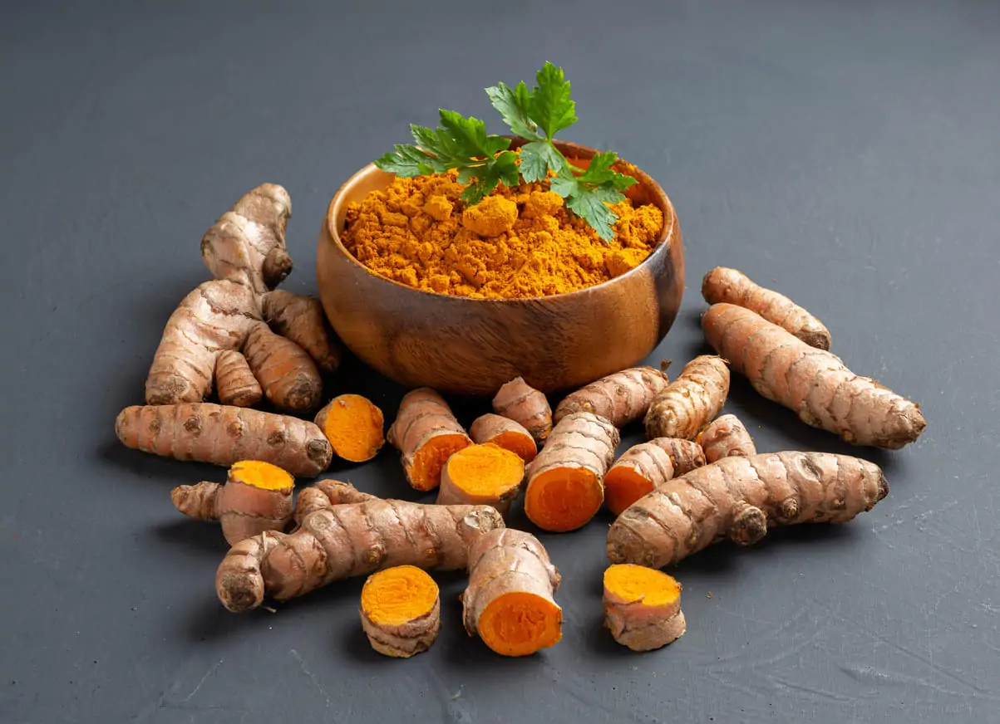

Kandungan Utama
- Kurkumin (Curcumin)
- Minyak atsiri
- Flavonoid
- Polifenol
- Vitamin C
- Kalium
- Zat Besi
- Antioksidan alami

Nama Ilmiah : Curcuma longa
Kunyit merupakan tanaman rimpang yang telah lama dimanfaatkan sebagai rempah sekaligus tanaman obat keluarga (TOGA). Kandungan utama berupa kurkumin, minyak atsiri, flavonoid, dan antioksidan menjadikan kunyit bermanfaat untuk membantu menjaga kesehatan tubuh serta banyak digunakan sebagai bahan obat tradisional maupun minuman herbal.
Kunyit memiliki banyak manfaat bagi kesehatan karena mengandung senyawa aktif yang bersifat antiinflamasi dan antioksidan. Secara tradisional kunyit dipercaya dapat membantu meredakan peradangan, mengurangi nyeri sendi, melindungi sel-sel tubuh dari kerusakan akibat radikal bebas, menjaga kesehatan hati, membantu memperlancar sistem pencernaan, meningkatkan produksi empedu, mengurangi rasa kembung, membantu meningkatkan daya tahan tubuh, menjaga kesehatan kulit, serta membantu mempercepat proses penyembuhan luka ringan. Berbagai penelitian juga menunjukkan bahwa kurkumin memiliki potensi dalam membantu menjaga kesehatan metabolisme tubuh apabila dikonsumsi secara tepat.
Konsumsi kunyit sebaiknya dalam jumlah yang wajar. Penggunaan berlebihan dapat menyebabkan gangguan lambung pada sebagian orang. Bagi ibu hamil, penderita batu empedu, atau pengguna obat pengencer darah, disarankan berkonsultasi dengan tenaga kesehatan sebelum mengonsumsi kunyit secara rutin.
Gunakan QR Code berikut untuk membuka halaman informasi tanaman kunyit.